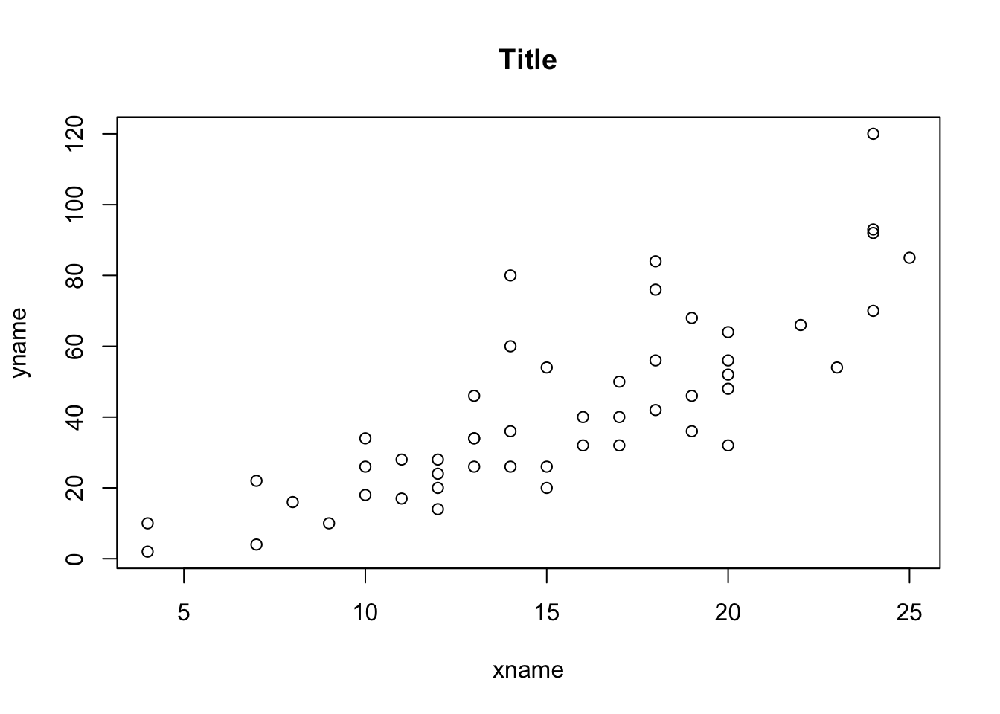

Chapter -6 Simple regressions
6.1 Basics regressions
Regressions, correlation and dummy’s
Y = Dependent
X = Explanatory
Correlation
cor(x, y)## [1] 0.8068949Creating the regression:
- To plot the regression model
- Evaluates the coefficient of the model
- Only the first colum estimattion
model <- lm(y~x, data = data)
summary(model)$coef## Estimate Std. Error t value Pr(>|t|)
## (Intercept) -17.579095 6.7584402 -2.601058 1.231882e-02
## x 3.932409 0.4155128 9.463990 1.489836e-12est <- summary(model)$coef[,1]6.1.1 Summarizing regressions:
- Using stargazer package
library(stargazer)##
## Please cite as:## Hlavac, Marek (2018). stargazer: Well-Formatted Regression and Summary Statistics Tables.## R package version 5.2.2. https://CRAN.R-project.org/package=stargazerstargazer(lm(y~x, data=data), type="text")##
## ===============================================
## Dependent variable:
## ---------------------------
## y
## -----------------------------------------------
## x 3.932***
## (0.416)
##
## Constant -17.579**
## (6.758)
##
## -----------------------------------------------
## Observations 50
## R2 0.651
## Adjusted R2 0.644
## Residual Std. Error 15.380 (df = 48)
## F Statistic 89.567*** (df = 1; 48)
## ===============================================
## Note: *p<0.1; **p<0.05; ***p<0.01# Multiple models adjacent
model1 <- lm(y~x, data=data)
model2 <- lm(x~y, data=data)
stargazer(model1, model2, type="text")##
## ==========================================================
## Dependent variable:
## ----------------------------
## y x
## (1) (2)
## ----------------------------------------------------------
## x 3.932***
## (0.416)
##
## y 0.166***
## (0.017)
##
## Constant -17.579** 8.284***
## (6.758) (0.874)
##
## ----------------------------------------------------------
## Observations 50 50
## R2 0.651 0.651
## Adjusted R2 0.644 0.644
## Residual Std. Error (df = 48) 15.380 3.156
## F Statistic (df = 1; 48) 89.567*** 89.567***
## ==========================================================
## Note: *p<0.1; **p<0.05; ***p<0.01- Using summary function:
summary(lm(y~x))##
## Call:
## lm(formula = y ~ x)
##
## Residuals:
## Min 1Q Median 3Q Max
## -29.069 -9.525 -2.272 9.215 43.201
##
## Coefficients:
## Estimate Std. Error t value Pr(>|t|)
## (Intercept) -17.5791 6.7584 -2.601 0.0123 *
## x 3.9324 0.4155 9.464 1.49e-12 ***
## ---
## Signif. codes: 0 '***' 0.001 '**' 0.01 '*' 0.05 '.' 0.1 ' ' 1
##
## Residual standard error: 15.38 on 48 degrees of freedom
## Multiple R-squared: 0.6511, Adjusted R-squared: 0.6438
## F-statistic: 89.57 on 1 and 48 DF, p-value: 1.49e-12Regressions
Plotting regression
plot(y~x,data=data,
main="Title",
ylab="yname",
xlab="xname"
)
Including regression line:
plot(y~x,data=data,
main="Title",
ylab="yname",
xlab="xname"
)
abline(lm(y~x, data=data), col="blue")
Confidence interval around slope
confint(lm(y~x), level=0.95)## 2.5 % 97.5 %
## (Intercept) -31.167850 -3.990340
## x 3.096964 4.767853Sub-sampling regression
Specify dimensions [,]. First is row. Column, second.
- Selects the rows where age is larger than 5.
- Lower than 5.
sub1 <- summary(lm(y~x, data=data["speed">=5,]))
sub2 <- summary(lm(y~x, data=data["speed"<=5,]))###Dummy variables, diff in means
6.1.2 Regression + dummy
Y = Constant0 + B0 * X - Diff in means + B1 * variable1*2
Omitting the intercept:
Shows the means separately and not the difference between means. Tests whether the expected counts are different from zero.
lm(y ~ x - 1, data = data)##
## Call:
## lm(formula = y ~ x - 1, data = data)
##
## Coefficients:
## x
## 2.909Reorders group, to specific value to be first.
variable2 <- relevel(variable, “C”)
6.2 Prediction
model <- lm(y~x)
newdata <- data.frame(variablename = c(1:50))
pred <- predict(model, newdata = newdata)Prediction confidence interval:
- One value
- Multiple values from a existing data frame
pred1 <- predict(model, data.frame(valuename = x), interval = "confidence", level=0.95)
pred2 <- predict(model, newdata = newdata, interval = "confidence", level=0.95)Prediction interval
- One value
- Multiple values from a existing data frame
pred1 <- predict(model, data.frame(valuename = x), interval="predict",level=0.95)
pred2 <- predict(model, newdata, interval="predict",level=0.95)6.2.1 Confidence and prediction plotting
Adds: observed values, fitted line, conf interval, predicted interval
library(HH)## Loading required package: lattice## Loading required package: grid## Loading required package: latticeExtra## Loading required package: multcomp## Loading required package: mvtnorm## Loading required package: survival## Loading required package: TH.data## Loading required package: MASS##
## Attaching package: 'TH.data'## The following object is masked from 'package:MASS':
##
## geyser## Loading required package: gridExtrafit <- lm(y~x, data = data)
ci.plot(fit)
###Prediction with dummy variables
Prediction = 𝛼1+𝛼2Constant Dummy+𝛽1𝑆𝑖𝑧𝑒+𝛽2Slope Dummy
###Prediction intervals examples
Prediction
fit <- lm(y ~ x + d + d, data = data)
pred <- predict(fit, data.frame(VariableX = c(10), Dummy = c(1), Slopedummy = c(10)) )## Warning: 'newdata' had 1 row but variables found have 50 rows## Warning in predict.lm(fit, data.frame(VariableX = c(10), Dummy = c(1),
## Slopedummy = c(10))): prediction from a rank-deficient fit may be misleadingConfidence interval prediction
fit <- lm(y ~ x + d + d, data = data)
pred <- predict(fit, data.frame(VariableX = c(10), Dummy = c(1), Slopedummy = c(10), interval="confidence"))## Warning: 'newdata' had 1 row but variables found have 50 rows## Warning in predict.lm(fit, data.frame(VariableX = c(10), Dummy = c(1),
## Slopedummy = c(10), : prediction from a rank-deficient fit may be misleadingPrediction interval
fit <- lm(y ~ x + d + d, data = data)
pred <- predict(fit, data.frame(VariableX = c(10), Dummy = c(1), Slopedummy = c(10), interval="predict"))## Warning: 'newdata' had 1 row but variables found have 50 rows## Warning in predict.lm(fit, data.frame(VariableX = c(10), Dummy = c(1),
## Slopedummy = c(10), : prediction from a rank-deficient fit may be misleading6.3 Data problems
Residual plot
# residual.plots(fitted(fit), resid(fit), sigma.hat(fit), main="Title")Influential measure test
im <- influence.measures(fit)###Multicollinearity
- F-test
- Variance inflation factors greater than 10
fit <- lm(y~x + d, data = data)
anova(fit)## Analysis of Variance Table
##
## Response: y
## Df Sum Sq Mean Sq F value Pr(>F)
## x 1 21186 21185.5 89.567 1.49e-12 ***
## Residuals 48 11354 236.5
## ---
## Signif. codes: 0 '***' 0.001 '**' 0.01 '*' 0.05 '.' 0.1 ' ' 1vif(fit)## x d
## 1 NaN6.3.1 ANOVA
One-way: one value
res.aov <- aov(y ~ x, data = data)
summary(res.aov)## Df Sum Sq Mean Sq F value Pr(>F)
## x 1 21185 21185 89.57 1.49e-12 ***
## Residuals 48 11354 237
## ---
## Signif. codes: 0 '***' 0.001 '**' 0.01 '*' 0.05 '.' 0.1 ' ' 1Two-way: more than two factors
res.aov <- aov(y ~ x + d, data = data)
summary(res.aov)## Df Sum Sq Mean Sq F value Pr(>F)
## x 1 21185 21185 89.57 1.49e-12 ***
## Residuals 48 11354 237
## ---
## Signif. codes: 0 '***' 0.001 '**' 0.01 '*' 0.05 '.' 0.1 ' ' 1With interaction
res.aov <- aov(y ~ x * d, data = data)
summary(res.aov)## Df Sum Sq Mean Sq F value Pr(>F)
## x 1 21185 21185 89.57 1.49e-12 ***
## Residuals 48 11354 237
## ---
## Signif. codes: 0 '***' 0.001 '**' 0.01 '*' 0.05 '.' 0.1 ' ' 1Three-way
- Three way
- With interaction
summary(aov(y ~ x + d, data=data))## Df Sum Sq Mean Sq F value Pr(>F)
## x 1 21185 21185 89.57 1.49e-12 ***
## Residuals 48 11354 237
## ---
## Signif. codes: 0 '***' 0.001 '**' 0.01 '*' 0.05 '.' 0.1 ' ' 1summary(aov(y ~ x + d, data=data))## Df Sum Sq Mean Sq F value Pr(>F)
## x 1 21185 21185 89.57 1.49e-12 ***
## Residuals 48 11354 237
## ---
## Signif. codes: 0 '***' 0.001 '**' 0.01 '*' 0.05 '.' 0.1 ' ' 1MANOVA: Multiple factors
- Test in difference
- Test separately
test_manova <- manova(cbind(y, d) ~ x, data = data) summary(test_manova) summary.aov(test_manova)